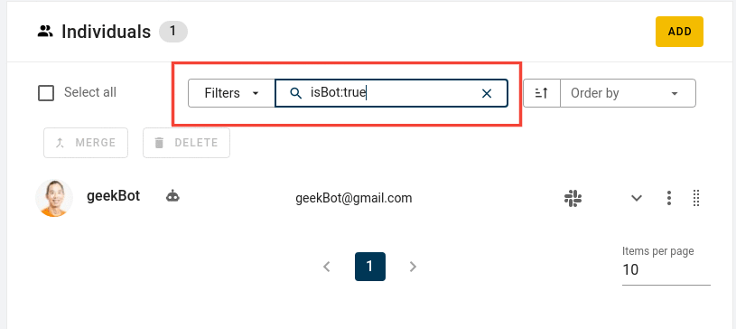

What more can SortingHat do¶
Easy profile filtering
Looking for a particular profile ? SortingHat provides several filters which can be used to filter through the lists of individuals to find the required one. You can filter the profiles according to the following filters.isBot
Filter profiles marked as bots. For exampleisBot: truewill return all profiles marked as bot and vice versa.
isLocked
Filter profiles marked as locked. For exampleisLocked: truewill return all profiles marked as locked and vice versacountry
Filter using either country name or country code . For examplecountry: "United States of Americaandcountry: USAreturn the same result.gender
Filter profiles based on their gender. For examplegender: non binarysource
Filter based on data source. For examplesource: Githubenrollement
Filter based on organisations. For exampleenrollment: "Bitergia"isEnrolled
Filter based on enrollement status. For exampleisEnrolled: truewill return all profiles currently enrolled at some organisation and vice versaenrollmentDate
Filter profiles based on when they were affiliated to an organisation.Filter
Explanation
enrollmentDate:>YYYY-MM-DDMatches individuals that were affiliated to an organization after the given date.
enrollmentDate:>=YYYY-MM-DDMatches individuals that were affiliated to an organization on or after the given date.
enrollmentDate:<YYYY-MM-DDMatches individuals that were affiliated to an organization before the given ;date.
enrollmentDate:<=YYYY-MM-DDMatches individuals that were affiliated to an organization on or before the given date.
enrollmentDate:YYYY-MM-DD…YYYY-MM-DDMatches individuals that were affiliated to an organization between the given dates
lastUpdated
Filter profiles based on when they were modified.Filter
Explanation
lastUpdated:>YYYY-MM-DDMatches individuals that were updated after the given date
lastUpdated:>=YYYY-MM-DDMatches individuals that were updated on or after the given date.
lastUpdated:<YYYY-MM-DDMatches individuals that were updated before the given date.
lastUpdated:<=YYYY-MM-DDMatches individuals that were updated on or before the given date
lastUpdated:YYYY-MM-DD…YYYY-MM-DDMatches individuals that were updated between the given dates.
Lock a profile
SortingHat provides the ability to lock a profile. That is, no merge/delete/edit can be acccomplish with that particular profile. It is basically blacklisted from involving in any of the processes which can happen in SortingHat. In order to lock a profile, simply hover right next to the profile name and a bunch of icons should appear. Click on the lock icon to lock the profile.
Note: Profile can be unlocked by clicking on the lock icon again
Set profile as Bot
As we know, some identities can turned out to be bots. In order to remedy that, SortingHat provides the ability to mark profiles as Bot. The latter can be done either when creating a profile or after creating a profile.When creating a profile, you’ll have the option to mark a profile as Bot. Simply check that option and Save.

After creating a profile, hover right next to the profile’s name and a set of icons will appear. Click on the bot icon to mark it as bot.
Order profiles SortingHat provides the ability to display the list of profiles in ascending or descending order based on three filters (Last Updated, Created data and Name)

Un-enroll an indivudual from an organisation
Simply go to the person’s profile and in theOrganisationssection, click on Bin icon to remove that particular org from someone’s profile. In the case, all of the affiliation need to be removed, click on the “Remove all” button in the Organisations section.